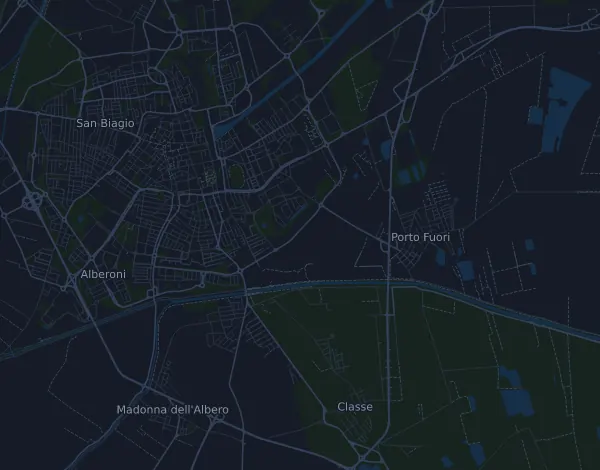

Maratona di Ravenna Città d'Arte – 42K
- Distanz
- 42,2 km
- Höhenmeter
- ↑ 115 m
- Höchster Punkt
- 12 m ü. M.
- Untergrund
- Straße
- Profil
- Flach
Höhenprofil
Mit Mila vorbereiten
Mila ist eine Lauf-Coach-App. Nimmst du einen Lauf in deinen Plan auf, plant der Coach deine Wochen bis zum Start nach deiner Form und gibt dir eine Zielzeitprognose und einen Plan für Tempo, Getränke und Verpflegung auf der Strecke.

Der richtige Lauf am richtigen Tag.
Die Strecke

Über die Strecke
Maratona di Ravenna Città d'Arte – 42K ist ein Straßenlauf in Ravenna, Italien, über 42,2 km. Die Strecke hat insgesamt 115 Höhenmeter bergauf und 113 bergab, 2,7 m pro km, und ist damit flach. Der höchste Punkt liegt auf 12 m ü. M., der tiefste auf -4 m.
Die Strecke hat keine zusammenhängenden Anstiege ab 25 Höhenmetern.
Entlang der Strecke gibt es ein Zeitlimit.
In der Mila-App beschreibt der Coach die Strecke ausführlich in deiner Sprache und plant dein Pacing und deine Verpflegung dafür.
Vor dem Start
Startort
Pala De André – Viale Europa 1, Ravenna
Zeitlimits
| Bei | Spätestens |
|---|---|
| km 42,2 | 6 h 30 min nach dem Start |
Quelle: maratonadiravenna.com, abgerufen am 7. November 2026
Pace-Tabelle
Maratona di Ravenna Città d'Arte – 42K in 3:00:00 – Pace pro km und Zwischenzeiten
4:16 pro km · km 10: 42:42 · km 21,1: 1:30:05 · km 30: 2:08:05 · km 40: 2:50:47 · Ziel: 3:00:00
Maratona di Ravenna Città d'Arte – 42K in 3:30:00 – Pace pro km und Zwischenzeiten
4:59 pro km · km 10: 49:49 · km 21,1: 1:45:06 · km 30: 2:29:26 · km 40: 3:19:14 · Ziel: 3:30:00
Maratona di Ravenna Città d'Arte – 42K in 4:00:00 – Pace pro km und Zwischenzeiten
5:42 pro km · km 10: 56:56 · km 21,1: 2:00:07 · km 30: 2:50:47 · km 40: 3:47:42 · Ziel: 4:00:00
Maratona di Ravenna Città d'Arte – 42K in 4:30:00 – Pace pro km und Zwischenzeiten
6:24 pro km · km 10: 1:04:03 · km 21,1: 2:15:08 · km 30: 3:12:08 · km 40: 4:16:10 · Ziel: 4:30:00
Die Zeiten setzen ein gleichmäßiges Tempo auf der ganzen Strecke voraus. Das ist reine Rechnung, keine Prognose: an Anstiegen, im Gedränge und an Verpflegungsstellen schwankt das Tempo.
Häufige Fragen
Wann findet Maratona di Ravenna Città d'Arte – 42K statt?
Der Lauf fand am Sonntag, 8. November 2026 statt. Das Datum der nächsten Ausgabe steht noch nicht fest.
Wie lang ist Maratona di Ravenna Città d'Arte – 42K und wie viele Höhenmeter hat die Strecke?
Der Lauf ist 42,2 km lang mit 115 Höhenmetern bergauf und 113 bergab. Der höchste Punkt liegt auf 12 m ü. M.
Wie ist die Strecke von Maratona di Ravenna Città d'Arte – 42K?
Die Strecke ist flach, mit durchschnittlich 2,7 Höhenmetern pro km. Sie hat keine zusammenhängenden Anstiege ab 25 Höhenmetern. Sie führt vom Start zu einem Ziel an einem anderen Ort. Der Untergrund ist Straße.
Gibt es Zeitlimits bei Maratona di Ravenna Città d'Arte – 42K?
Ja, laut Veranstalter: km 42,2: 6 h 30 min nach dem Start.
Wie teile ich mir Maratona di Ravenna Città d'Arte – 42K ein?
Lauf mit gleichmäßiger Anstrengung und halte dich auf den ersten Kilometern zurück, wenn die Beine frisch sind und das Feld davonzieht. Die Strecke ist flach, ein gleichmäßiges Tempo pro Kilometer passt deshalb gut. In Mila bekommst du einen Pace-Plan für genau diese Strecke, passend zu deiner Form.
Ähnliche Läufe
Weitere Läufe in der Nähe
- Eurospin Verona Run Marathon 42K15. November 2026 · Verona, Italien
- Cinque Mulini (94ª edizione) – senior, ca 10 km22. November 2026 · San Vittore Olona, Italien
- Estra Firenze Marathon 42,2 km29. November 2026 · Firenze, Italien
- FIAT Torino City Marathon 42,2 km29. November 2026 · Torino, Italien
- Campaccio Cross Country 10 km6. Januar 2027 · San Giorgio su Legnano, Italien
- RomaOstia Half Marathon 21 km28. Februar 2027 · Roma, Italien
Mit Mila vorbereiten
Der richtige Lauf am richtigen Tag.
Die Angaben stammen aus der Streckendatei und den Informationen des Veranstalters. Prüfe Datum, Startzeiten und Regeln beim Veranstalter.
Mila ist nicht mit dem Veranstalter oder den Sponsoren des Laufs verbunden und wird von ihnen weder gesponsert noch empfohlen. Namen und Marken gehören ihren Inhabern. Veranstalter oder Rechteinhaber? Änderung oder Entfernung beantragen